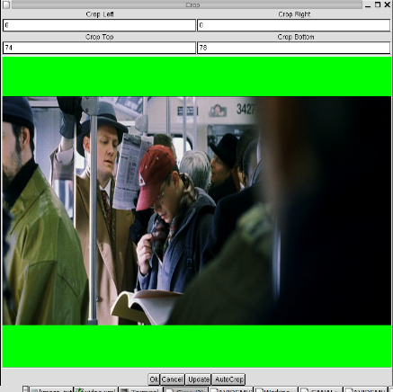

|
Video: Image alteration filters 1.Foreword This set of filters deeply alter the source video : Resize, rotate, flip and crop. 2.Image Alteration Filters This filter crops the video (for example to remove black border). The cropped value left/right/top/bottom must be even. You can preview the part that will be cropped using the Apply button. On a clean video (dvd), you can try the Autocrop button. It won't work very well on a noisy source (capture) 
The resize filter is a port to YV12 of avisynth resize filter. Mplayer resize is a port of Michael Niedermayer resize filter, which is used in mplayer Avisynth resize is slightly more accurate, but mplayer resize is 3x faster without any perceptible difference. The filter dialog config box is the same for both filters :
You can direcly enter the new width/height and the resize algorithm or use the slider and the menu. Three resize methods are proposed : It is important as 4/3 has non square pixel (different for PAL and NTSC) and if you do 1:1 -> 1:1 you will end up with distorted image. This filter replaces border(s) of video by pure black. It may be useful to replace dirty border by clean one (VHS capture for example) This filter *ADDS* black border (the previous one replaces). It is used internally by *VCD res to resize a video to a give size without altering the aspect ratio. This filter vertically flips the video. Usefull when using broken video capture card for example. This filter was written by Tracy (see file for more informations) It rotates the video by 90/180/270 degree. The author uses it with video from its camera in landscape mode.
|